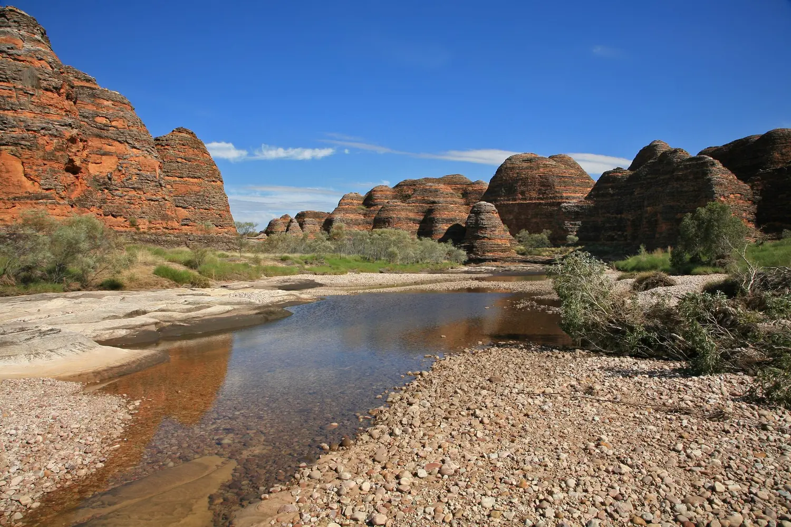
Eight regions.
Australia does not divide usefully into states. It divides into climates, rock and water. These are the eight that matter, with the custodians who have managed them, what you actually do there, and the months the country allows it.
Purnululu · W. Bulach · CC BY-SA 4.0

Dietmar Rabich · CC BY-SA 4.0
The Red Centre
Anangu & Arrernte country · NTA sandstone monolith 348 metres high, a cluster of thirty-six domes twenty-five kilometres west of it, and a canyon with a rim walk that most people underestimate. The plain they stand on runs flat for six hundred kilometres in every direction, which is why they look the way they do.
Anangu have managed this country continuously and still do, jointly with Parks Australia. The climb closed on 26 October 2019 at their request after decades of asking. Nothing was lost — the 10.6-kilometre base walk was always the better experience, and Tjukurpa, the law that holds the place, is legible from the ground.
- Uluru base walk — 10.6 km, flat, three to four hours. Start at first light; there is no shade after nine.
- Valley of the Winds, Kata Tjuta — 7.4 km through the domes. Closes at 11 am when forecasts exceed 36 °C.
- Kings Canyon Rim Walk — 6 km, a hard climb in the first twenty minutes and then level.
- Larapinta Trail — 223 km along the West MacDonnells, walkable in single sections from Alice Springs.
- Alice → Uluru
- 450 km · 4.5 hrs
- Best months
- May–Sep
- Avoid
- Dec–Feb
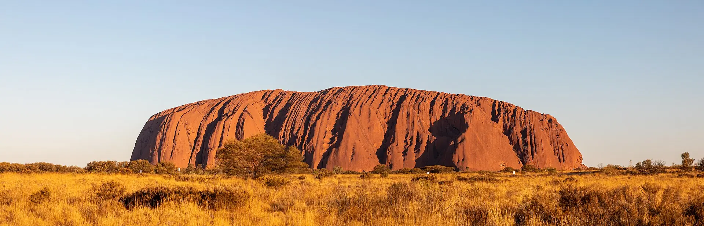

The Top End
Bininj & Mungguy country · NTKakadu is 19,804 square kilometres — bigger than Wales — and holds one of the longest continuous records of human art anywhere on Earth. Some galleries at Ubirr have been painted, repainted and added to across twenty thousand years, including a thylacine that has not walked the mainland in about three thousand.
The country is dual-listed for both natural and cultural World Heritage value, and it is unrecognisable between seasons. In March the floodplain is an inland sea; by August it is cracked mud and concentrated wildlife. Neither is the "real" Kakadu — the six-season calendar exists because both are.
- Ubirr and Burrungkuy rock art galleries, ideally with a Bininj guide who can tell you what you are looking at.
- Yellow Water at dawn — the density of saltwater crocodiles and magpie geese is genuinely startling.
- Jim Jim and Twin Falls — spectacular in April, often dry by August, and 4WD-only.
- Arnhem Land next door — permit required, arranged through the Northern Land Council or a licensed operator.
- Darwin → Jabiru
- 253 km · 3 hrs
- Best months
- May–Sep
- Wettest
- Jan–Mar

The Kimberley
Gija, Jaru, Bunuba & others · WAThree times the size of England with fewer than forty thousand people in it. The Bungle Bungle domes are sandstone striped by alternating bands of iron oxide and cyanobacteria — the dark bands are living organisms holding the soft rock together. They were not widely known outside Gija country until the early 1980s.
Windjana and Danggu gorges cut through something even older: a Devonian barrier reef, 350 million years old, that once ran for hundreds of kilometres through a tropical sea. The fossil corals are still visible in the walls.
- Purnululu — Cathedral Gorge and Echidna Chasm. The access track is 53 km of rough 4WD and takes two to three hours each way.
- Gibb River Road — 660 km of unsealed road between Derby and Kununurra, with gorges strung along it.
- Horizontal Falls in Talbot Bay, where a ten-metre tide forces seawater through two narrow gaps.
- Gwion Gwion and Wandjina rock art — visit only with the Traditional Owners who hold it.
- Season
- Apr–Oct only
- Broome → Kununurra
- 1,044 km
- Vehicle
- High-clearance 4WD
Ningaloo & the Pilbara
Banyjima, Yinhawangka & Baiyungu country · WAKarijini's gorges are cut into banded iron formation roughly 2.5 billion years old — rock laid down when the first oxygen-producing life on Earth was rusting the oceans. The walls are a geological record of the atmosphere changing, and you climb down inside them to swim.
Four hundred kilometres west, Ningaloo runs 260 kilometres along the coast as a fringing reef: no boat required, you walk off the beach into it. The whale sharks arrive after the March coral spawn.
- Hancock and Weano gorges — Handrail Pool at the bottom is exactly as advertised, and the descent is Class 5.
- Whale sharks off Exmouth, mid-March to July, with licensed operators only.
- Turquoise Bay drift snorkel — enter upstream, let the current carry you over the coral, exit before the sandbar.
- Humpbacks August to October, on one of the largest migrations in the world.
- Reef length
- 260 km
- Whale shark
- Mar–Jul
- Karijini best
- May–Sep

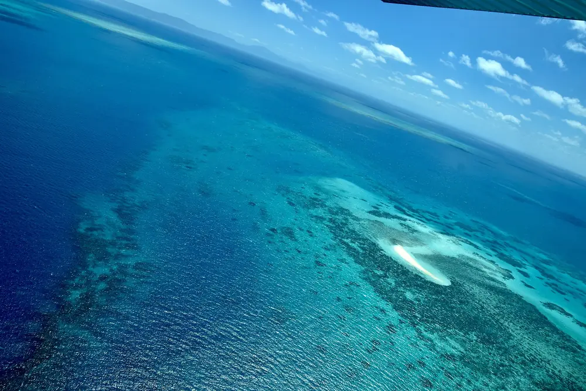
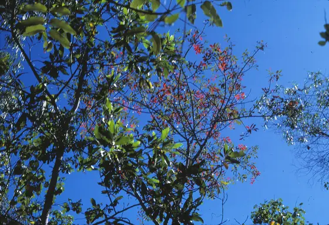
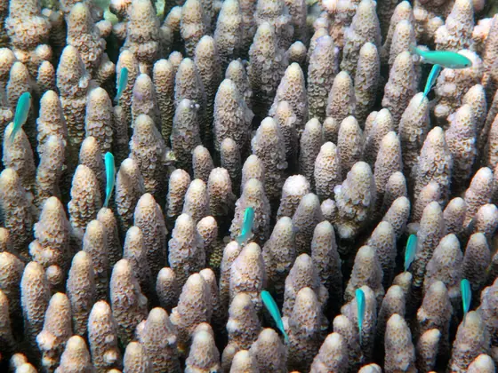
Ank Kumar, John Robert McPherson & Steve Evans · CC BY-SA 4.0 / CC BY 2.0
Reef & Wet Tropics
Kuku Yalanji, Yirrganydji & Ngaro sea country · QLDTwo World Heritage areas meet on the coast north of Cairns, which happens nowhere else. The reef is roughly 2,300 kilometres long and made of some 3,000 individual reefs and 900 islands; it is the largest structure built by living organisms on the planet, and it is visibly under pressure — mass bleaching has hit repeatedly since 2016.
Inland of it, the Daintree is a remnant of the forest that covered Gondwana. Around 180 million years of continuous rainforest, holding plant lineages that exist almost nowhere else, including the primitive flowering plants at the base of the family tree.
- Outer-reef diving from Cairns or Port Douglas — the outer ribbons are in far better condition than the inshore reefs.
- Whitehaven Beach and the Whitsundays — 74 islands, best reached under sail over three days.
- Daintree with a Kuku Yalanji guide — the difference between seeing green and seeing a pharmacy.
- Coral spawning — one or two nights after the November full moon, and divable if you plan around it.
- Best months
- Jun–Oct
- Stinger season
- Nov–May
- Cairns → Cape Trib
- 140 km
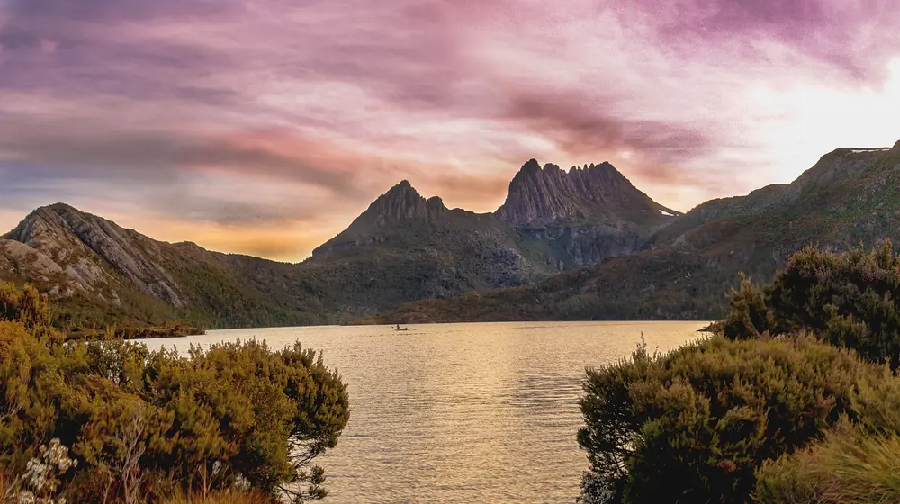
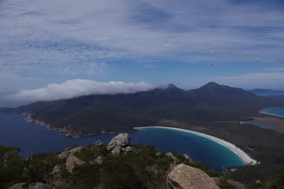
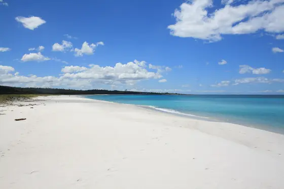
Imtarit, Andrew Turner & Diego Delso · CC BY-SA 4.0 / 3.0
Tasmania
palawa / pakana countryCold, mountainous, forested and small enough to drive around in a week. Nearly half the island is protected, and the Tasmanian Wilderness World Heritage Area covers about a fifth of it. The prevailing westerlies have crossed open ocean since South America, which is why the air at Cape Grim is used as a global baseline for clean air.
The orange on the Bay of Fires boulders is lichen, not iron. The name came from Tobias Furneaux in 1773, who saw Aboriginal fires burning along the coast.
- The Overland Track — 65 km over six days, Cradle Mountain to Lake St Clair. Booked, fee-paying and one-directional from October to May.
- Wineglass Bay lookout — an hour return and steep; the beach itself is another hour down.
- Mona, Hobart — arrive by ferry, and give it most of a day.
- Aurora australis — possible from southern beaches on clear winter nights when activity is high.
- Best months
- Dec–Mar
- Circuit drive
- ~1,200 km
- Protected
- ~42% of island

The Southern Coast
Gadubanud, Adnyamathanha & Peramangk country · VIC & SAThe Great Ocean Road is 243 kilometres from Torquay to Allansford, hand-built between 1919 and 1932 by around three thousand returned servicemen and dedicated to those killed in the First World War. It is the largest war memorial in the world, and you drive along it.
Keep going west and north and the coast becomes vineyards, then the Flinders Ranges — where Ikara, Wilpena Pound, is an eighty-square-kilometre natural amphitheatre of upturned rock that Adnyamathanha law reads as the bodies of two akurra, serpents.
- Drive it westward — the ocean is on your left and the pull-offs are on your side of the road.
- Kangaroo Island — 4,405 km², still visibly recovering from the 2019–20 fires, and better for it in wildlife terms.
- Barossa and McLaren Vale — ungrafted Shiraz on pre-phylloxera rootstock planted in the 1840s.
- Ikara-Flinders Ranges — walk into the Pound from Wilpena, or fly over it at first light.
- Road length
- 243 km
- Stacks standing
- Eight
- Best months
- Nov–Apr
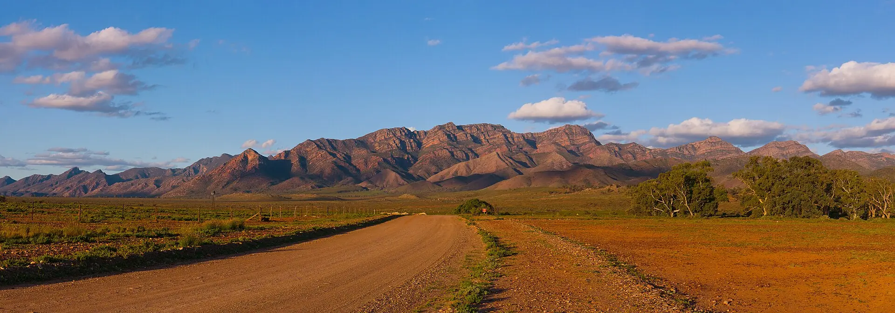
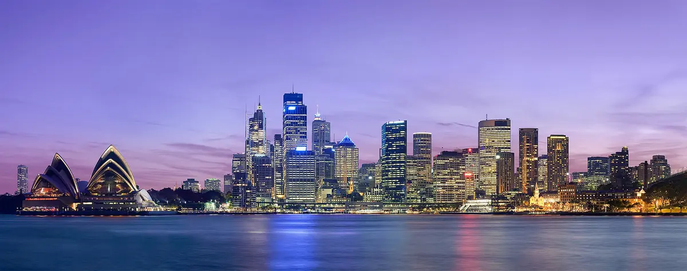
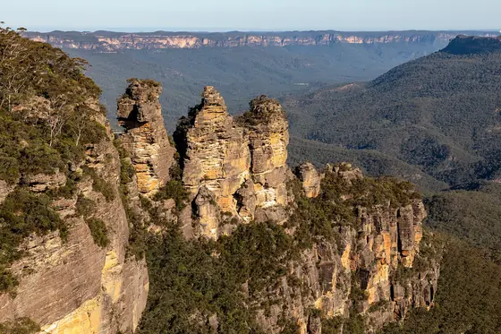
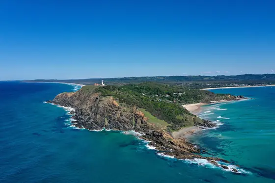
Diliff, Dietmar Rabich & Kpravin2 · CC BY-SA 3.0 / 4.0
Sydney & the East
Gadigal, Darug, Gundungurra & Arakwal country · NSWMost visitors land here, and the honest advice is: use it as a doorway rather than a destination. Sydney is a genuinely great harbour city and two days is enough before the country west and north of it becomes more interesting.
The blue in the Blue Mountains is real and physical — eucalypt oils and fine particles scattering short wavelengths across the valleys. The escarpment drops six hundred metres in places, and the walking below the rim is far better than the lookouts above it.
- Bondi to Coogee — 6 km of clifftop path past six beaches and the Bronte and Wylie's ocean pools.
- Grand Canyon Track, Blackheath — 6 km below the rim, and almost empty compared with Katoomba.
- Cape Byron — the most easterly point of the Australian mainland, with humpbacks passing June to November.
- An Aboriginal-led harbour walk — Sydney's middens, engravings and fishing grounds are still there under the city.
- Sydney → Katoomba
- 103 km · 1.5 hrs
- Sydney → Byron
- 770 km
- Best months
- Sep–Nov, Mar–May
Now put them in an order.
You cannot see eight regions in one trip. Four routes, written day by day, that each do one part of the continent properly.